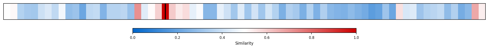
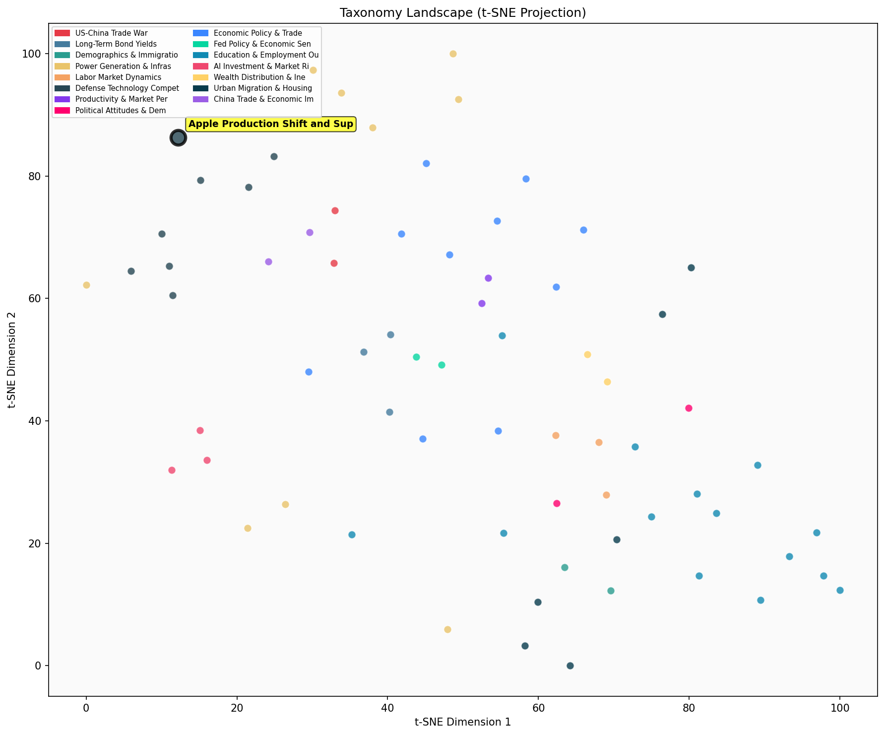

Description
This subcluster examines Apple's strategic shift away from China-concentrated manufacturing toward supply chain diversification, particularly through expanded production in India. Articles track quantitative metrics like Apple's iPhone production percentages by country, year-over-year growth rates, and capital investment figures. The content draws from industry reports, Bloomberg analyses, and supply chain data to document Apple's operational responses to geopolitical tensions. Unlike sibling subclusters focused on semiconductors, defense spending, or minerals policy, this group specifically analyzes how a major consumer technology company restructures global manufacturing networks, automation strategies, and supplier relationships to reduce geographic concentration risks while maintaining production efficiency.
Similarity to All 70 Subclusters
Each cell represents a subcluster. Color intensity shows similarity (blue=low, red=high). Black line marks current subcluster position.
Relationship to Primary Clusters
Average similarity to each of the 15 primary clusters. Larger area = stronger relationship to that cluster.
Taxonomy Landscape
All 70 subclusters positioned by similarity (t-SNE). Current subcluster highlighted with label. Click to enlarge.
Network Connections
Current subcluster at center, connected to related subclusters. Line thickness = similarity strength.
Most Representative Articles
-
1. Apple currently manufactures 20% of its iPhones in India, up 60% year-over-year, “a sign of continue
-
2. Apple is planning on shifting assembly of all US-sold iPhones, 28% of total production, to India by
-
3. Apple doubled iPhone production in India last fiscal year, assembling 14% of iPhones there as it acc
-
4. Apple will have problems moving higher-end iPhone production to Vietnam as the former lacks China’s
-
5. Apple's decoupling strategy is increasingly focused on India. Apple plans to shift 25% of iPhone pr
Edge Cases (Boundary Articles)
-
1. For the first time, Apple is selling a new generation iPhone manufactured in India on launch day. AThis article is borderline because while it clearly discusses Apple's production shift from China to India (fitting the cluster theme), it focuses narrowly on a single milestone event (iPhone launch day manufacturing) rather than examining the broader strategic supply chain diversification efforts that define the cluster. The article's emphasis on a specific product launch timing makes it somewhat tangential to the cluster's focus on comprehensive supply chain strategy analysis.
-
2. .@Brad_Setser argues that after a 2022 change in China’s balance of payments methodology, China’s ofThis article is borderline because while it discusses China's economic data and trade balance, it focuses specifically on balance of payments methodology and trade surplus calculations rather than Apple's manufacturing decisions or supply chain diversification strategies. The article would be better classified in the "China Trade Surplus & Export Growth" cluster since it directly addresses China's trade surplus reporting discrepancies, which aligns much more closely with that cluster's focus.
-
3. China has increased customs checks on exports of “dual use” production equipment to Southeast Asia aThis article is borderline because while it mentions Apple's supply chain diversification efforts, it primarily focuses on China's export restrictions on dual-use equipment rather than Apple's actual production shifts or manufacturing expansion in India. The content is more about trade policy and export controls affecting multiple American firms, which aligns better with the semiconductor supply chain and trade policy cluster.
Original Dendrogram